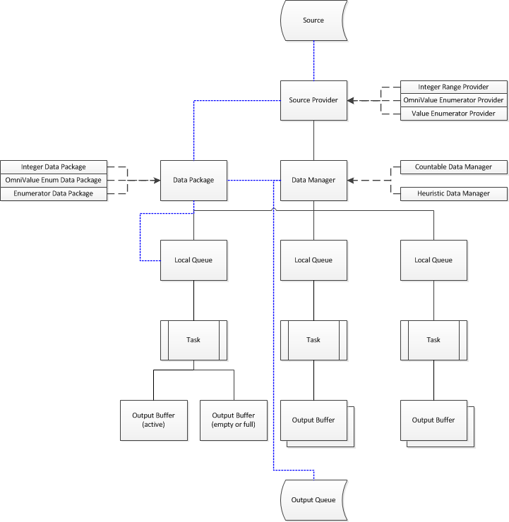
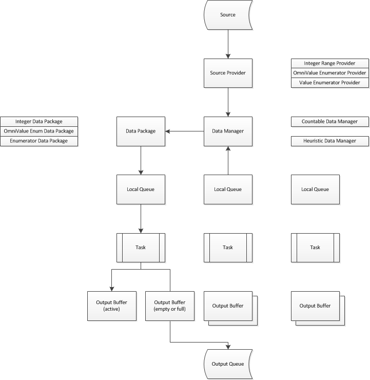
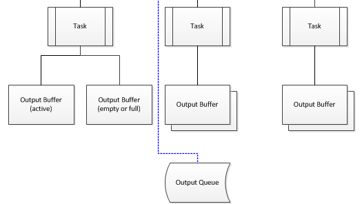

This simple code iterates from 1 to 1000 on all available cores in parallel and executes a simple procedure that contains no workload. All in all, the code will do nothing - but it will do it in a very complicated manner.
ForEach method creates a new TOmniParallelLoop<integer> object (that’s the object that will coordinate parallel tasks) and passes it a source provider - an object that knows how to access values that are being enumerated (integers from 1 to 1000 in this example).

OtlDataManager unit contains four different source providers - one for each type of source that can be passed to the ForEach method. If there is a need to extend ForEach with a new enumeration source, I would only have to add a few simple methods to the OtlParallel unit and write a new source provider.
ForEach tasks are started in InternalExecuteTask. This method firstly creates a data manager and attaches it to the source provider (compare this with the picture above - there is one source provider and one data manager in it). Next it creates an appropriate number of tasks and calls the task-specific delegate method from each one. [This delegate wraps your parallel code and provides it with proper input (and sometimes, output). There are many calls to InternalExecuteTask in the OtlParallel unit, each with a different taskDelegate and each providing support for a different kind of the loop.]
Data manager is a global field in the TOmniParallelLoop<T> object so it can be simply reused from the task delegate. The simplest possible task delegate (below) just creates a local queue and fetches values from the local queue one by one. This results in many local queues - one per task - all connected to the same data manager.
In case you’re wondering what loopBody is - it is the anonymous method you have passed to the Parallel.ForEach.Execute method.
1 procedureInternalExecuteTask(consttask:IOmniTask) 2 var 3 localQueue:TOmniLocalQueue; 4 value:TOmniValue; 5 begin 6 localQueue:=oplDataManager.CreateLocalQueue; 7 try 8 while(notStopped)andlocalQueue.GetNext(value)do 9 loopBody(task,value);10 finallyFreeAndNil(localQueue);end;11 end;
Let’s reiterate:
Source provider is created.
Data manager is created and associated with the source provider.
Each task creates its own local queue and uses it to access the source data.
As you’ll see in the next section, local queue retrieves data in packages (data package) and sends it to an output buffer which makes sure that the output is produced in a correct order (the output buffer part happens only if PreserveOrder method is called in the high-level code).
If the task runs out of work, it requests a new data package from the data manager, which gets this data from the source provider (more on that below). If the source provider runs out of data, data manager will attempt to steal some data from other tasks.

All this was designed to provide fast data access (blocking is limited to the source provider, all other interactions are lock-free), good workload distribution (when a task runs out of work before other tasks, it will steal some work from other tasks) and output ordering (when required).
Source provider
A source provider is an object that fetches data from the enumeration source (the data that was passed to the parallel for) and repackages it into a format suitable for parallel consumption. Currently there are three source providers defined in the OtlDataManager unit.
TOmniIntegerRangeProvider
Iterates over integer ranges (just like a ‘normal’ for statement does). As such, it doesn’t really fetch data from enumeration source but generates it internally.
TOmniValueEnumeratorProvider
Iterates over IOmniValueEnumerator, which is a special enumerator that can be accessed from multiple readers and doesn’t require locking. Currently, this enumerator is only provided by the IOmniBlockingCollection.
TOmniEnumeratorProvider
Iterates over Windows enumerators (IEnumerator) or Delphi enumerators (GetEnumerator, wrapped into TOmniValueEnumerator class).
All source providers descend from an abstract class TOmniSourceProvider which provides common source provider interface. In theory, an interface should be used for that purpose, but in practice source providers are very performance intensive and not using interfaces speeds the program by a measurable amount.
Not all source providers are created equal, and that’s why function GetCapabilities returns source provider capabilities:
1 TOmniSourceProviderCapability=(2 spcCountable,// source provider that knows how much data it holds3 spcFast,// source provider operations are O(1)4 spcDataLimit// data package can only hold limited amount of data5 );6 7 TOmniSourceProviderCapabilities=setof8 TOmniSourceProviderCapability;
TOmniIntegerRangeProvider is both countable (it’s easy to know how many values are between 1 and 10, for example) and fast (it takes a same amount of time to fetch 10 values or 10,000 values) while other two source providers are neither countable nor fast. The third capability, spcDataLimit is obsolete and not used. It was replaced by the GetPackageSizeLimit method.
The other important aspect of a source provider is the GetPackage method. It accesses the source (by ensuring a locked access if necessary), retrieves data and returns it in the data package. Implementation is highly dependent on the source data. For example, integer source provider just advances the current low field value and returns data package that doesn’t contain a bunch of values but just low and high boundaries (and that’s why it is considered being fast). Enumerator source provider locks the source, fetches the data and builds data package value by value. And in the simplest case, TOmniValueEnumerator source provider just fetches values and builds data package.
Data manager is the central hub in the OtlDataManager hierarchy. It seats between multiple local queues and the single source provider and makes sure that all parallel tasks always have work to do.
Two different data managers are implemented at the moment - a countable data manager and a heuristic data manager. The former is used if source provider is countable and the latter if it is not. Both descend from the abstract class TOmniDataManager.
The main difference between them lies in function GetNextFromProvider which reads data from the source provider (by calling its GetPackage method). In the countable provider this is just a simple forwarder while in the heuristic provider this function tries to find a good package size that will allow all parallel tasks to work at the full speed.
1 functionTOmniHeuristicDataManager.GetNextFromProvider( 2 package:TOmniDataPackage;generation:integer):boolean; 3 const 4 CDataLimit=Trunc(High(integer)/CFetchTimeout_ms); 5 var 6 dataPerMs:cardinal; 7 dataSize:integer; 8 time:int64; 9 begin10 // the goal is to fetch as much (but not exceeding <fetch_limit>)11 // data as possible in <fetch_timeout> milliseconds; highest amount12 // of data is limited by the GetDataCountForGeneration method.13 dataSize:=GetDataCountForGeneration(generation);14 ifdataSize>hdmEstimatedPackageSize.Valuethen15 dataSize:=hdmEstimatedPackageSize.Value;16 time:=DSiTimeGetTime64;17 Result:=SourceProvider.GetPackage(dataSize,package);18 time:=DSiTimeGetTime64-time;19 ifResultthenbegin20 iftime=0then21 dataPerMs:=CDataLimit22 elsebegin23 dataPerMs:=Round(dataSize/time);24 ifdataPerMs>=CDataLimitthen25 dataPerMs:=CDataLimit;26 end;27 // average over last four fetches for dynamic adaptation28 hdmEstimatedPackageSize.Value:=Round29 ((hdmEstimatedPackageSize.Value/4*3)+30 (dataPerMs/4)*CFetchTimeout_ms);31 end;32 end;
Local queue
Each parallel task reads data from a local queue, which is just a simple interface to the data manager. The most important part of a local queue is its GetNext method which provides the task with the next value.
Each local queue contains a local data package. GetNext first tries to read the next value from that data package. If that fails (data packages is empty – it was already fully processed), it tries to get new data package from the data manager and (if successful) retries fetching next data from the (refreshed) data package.
GetNext in the data manager first tries to get the next package from the source provider (via private method GetNextFromProvider which calls source provider’s GetPackage method). If that fails, it tries to steal part of workload from another task.
Stealing is the feature that allows all parallel tasks to be active up to the last value being enumerated. To implement it, data manager iterates over all local queues and tries to split each local queue’s data package in half. If that succeeds, half of the data package is left in the original local queue and another half is returned to the local queue that requested more data.
Package splitting is highly dependent on data type. For example, integer data package just recalculates boundaries while enumerator-based packages must copy data around.
Ordering (PreserveOrder) is usually used together with the Into modifier. The reason lies in the integration between the Parallel.ForEach infrastructure and your parallel code (the one that is executing as Execute payload). In the ‘normal’ ForEach, output from this parallel payload is not defined. You are allowed to generate any output in the payload but ForEach will know nothing about that. In this case OTL has no ability to preserver ordering because - at least from the viewpoint of the library - the parallelized code is producing no output.
When Into is used, however, your code uses a different signature (different parameters).
Parallel payload now takes two parameters. First is – as in the more common case – the input value while the second takes the output value. As you can see from the example, the parallelized code can produce zero or one output but not more.
This small modification changes everything. As the Parallel infrastructure has control over the output parameter, it can manage it internally, associate it with the input and make sure that output is generated in the same order as input was.
Let’s look at the innermost code - the part that is scheduling parallel tasks. When Into is used, InternalExecuteTask executes the following quite complicated code.
The data manager is associated with the output queue. (The oplIntoQueueIntf field contains a value passed to the Into method.)
A local queue is created, same as when ‘normal’ ForEach is executed.
An output buffer is created by the data manager and associated with the local queue.
For each input user code is executed and each non-empty output value is written into the output buffer.
Output buffer is released, as is local queue.
The interesting part is hidden in the background; inside local queue, data manager and output buffer.
The first modification lies in the data source. When PreserveOrder is used, each data package knows the source position it was read from. To simplify matters, data package splitting is not used in this case. [And because of that, data stealing cannot be used causing slightly less effective use of CPU as in the simpler ForEach case.]
Each local queue has an output buffer set associated with it.
Each output buffer set manages two output buffers. One is active and task is writing into it and another may be either empty or full. Each output buffer is associated with an input position - just as the data package is.

When we look at data reading/writing from the perspective of one task, everything is very simple. The task is reading data from a local queue (which reads data from a data package, associated with some position) and writing it to an output buffer (associated with the same position).
The tricky part comes up when the data package is exhausted (the if not Result branch in the code below).
1 functionTOmniLocalQueueImpl.GetNext(varposition:int64;varvalue:TOmniValue):boolean; 2 begin 3 Result:=lqiDataPackage.GetNext(position,value); 4 ifnotResultthenbegin 5 lqiBufferSet.ActiveBuffer.MarkFull; 6 lqiBufferSet.ActivateBuffer; 7 // this will block if alternate buffer is also full 8 Result:=lqiDataManager_ref.GetNext(lqiDataPackage); 9 ifResultthenbegin10 Result:=lqiDataPackage.GetNext(position,value);11 ifResultthen12 lqiBufferSet.ActiveBuffer.Range:=lqiDataPackage.Range;13 end;14 end;15 end;
First, the currently active buffer is marked as full. This causes NotifyBufferFull to be called (see below). Then, alternate buffer is activated. This call (ActivateBuffer) will actually block if alternate buffer is not free. In this case, the current thread is blocked until one of its buffers is written into the output queue.
From this point on, GetNext proceeds in the same way as when used in the simple ForEach, except that it sets active buffer’s position whenever new data package is read from the data manager.
The other part of the magic happens in the method that is called from MarkFull. It walks the buffer list and checks if there are any output buffers that are a) full and b) destined for the current output position. Such buffers are copied to the output and returned into use.
1 procedureTOmniBaseDataManager.NotifyBufferFull( 2 buffer:TOmniOutputBufferImpl); 3 begin 4 // Remove buffer from the list. Check if next buffer is waiting in 5 // the list. Copy buffer if it is full and repeat the process. 6 dmBufferRangeLock.Acquire; 7 try 8 while(dmBufferRangeList.Count>0)and 9 (BufferList[0].Range.First=dmNextPosition)and10 BufferList[0].IsFulldo11 begin12 buffer:=TOmniOutputBufferImpl(13 dmBufferRangeList.ExtractObject(0));14 dmNextPosition:=buffer.Range.Last+1;15 buffer.CopyToOutput;16 end;17 finallydmBufferRangeLock.Release;end;18 end;
To recap:
Each data buffer is associated with a position.
Each local queue has two output buffers, one is active, and another is either free or full.
Each output buffer is also associated with a position.
Local queue writes data to an output buffer.
When a buffer is full, it is put into a list of waiting buffers. At that moment all appropriate waiting buffers are copied to output.